Case Study — Luxury F&B FF&E
Full-scope luxury boutique restaurant FF&E — from marble reception desk and curved bar to crystal chandeliers and arched architectural screens. One PO, one integrator, multi-zone design cohesion.
6
Design Zones
16
Design Renderings
4
FF&E Categories
One
Integrator, One PO
AMAR FIRENZE draws from Florence's architectural heritage — arched openings, warm walnut wood, Carrara marble, and brass accents create an atmosphere of understated luxury. Every element, from the curved banquette seating to the geometric lattice screens, is custom-crafted to maintain design cohesion across all six zones.
Six distinct zones unified by a single design language — from grand entrance to open kitchen, every space tells the AMAR FIRENZE story.
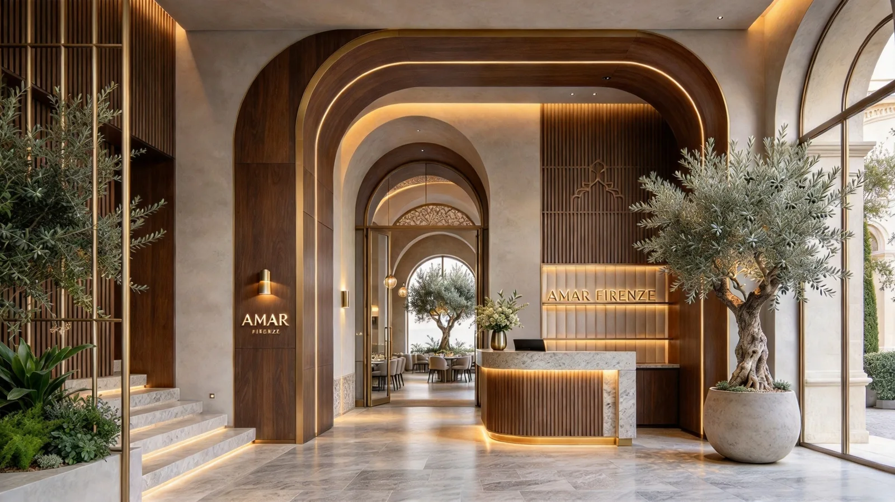
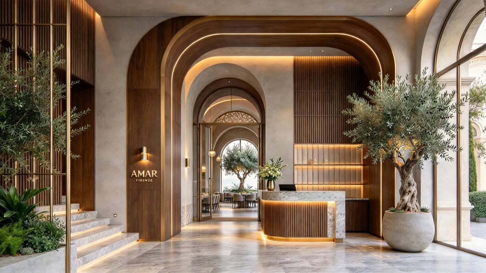
Arched walnut wood entrance frames with brass inlay, setting the tone for the luxury experience. Carrara marble reception desk with gold trim and vertical wood slat backdrop.
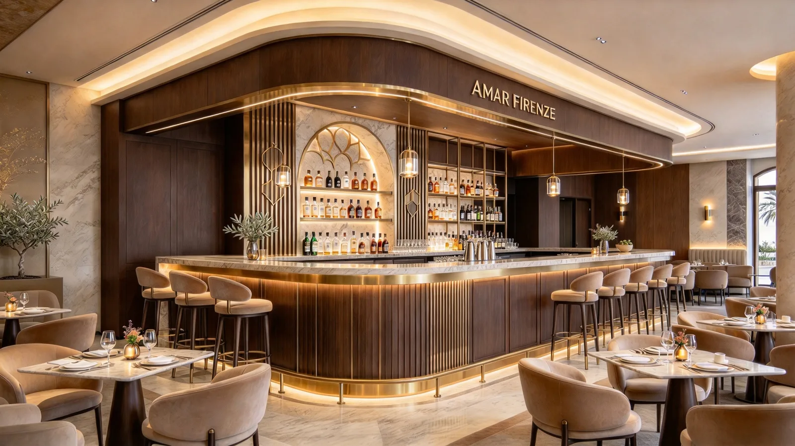
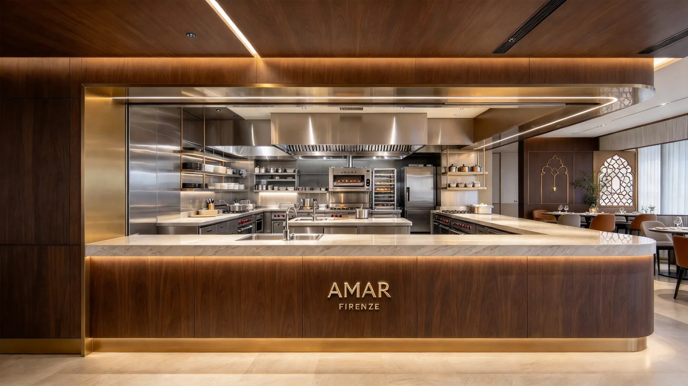
Sweeping curved bar with marble countertop, walnut wood vertical fluting, and arched display niches for spirits. Brass trim and under-bar LED lighting create an inviting glow.
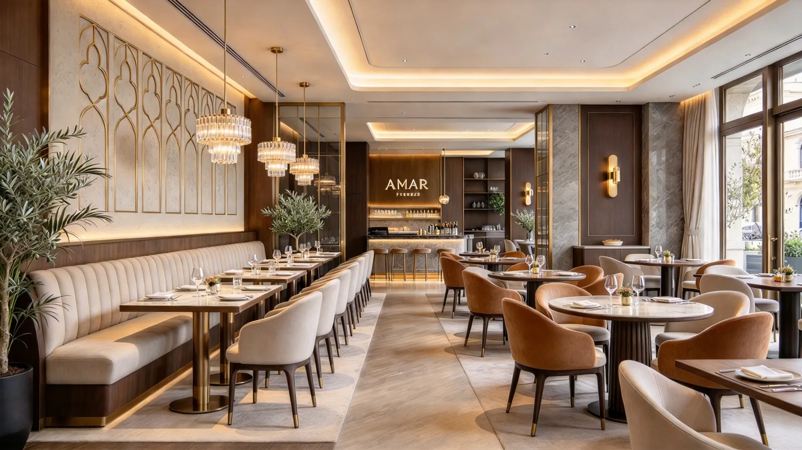
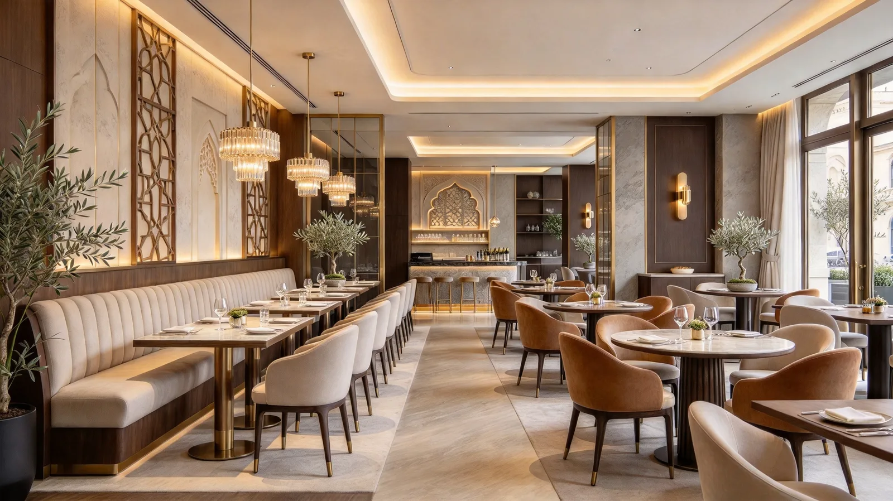
Grand dining room with cascading crystal chandeliers, long banquette seating along decorative geometric lattice walls, and a full bar visible in the background.
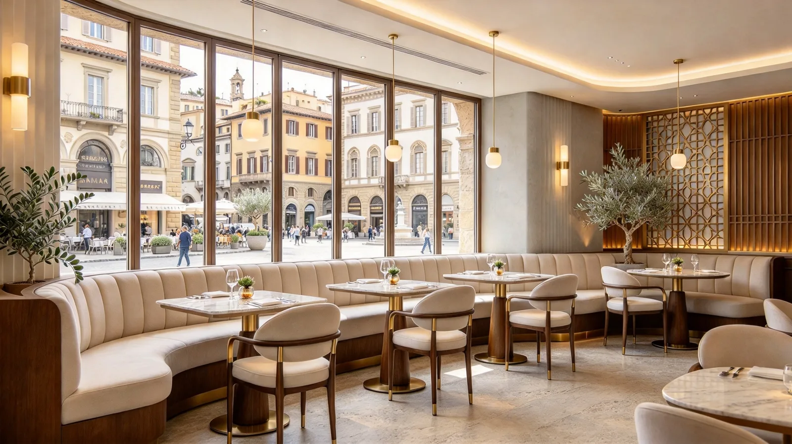
Floor-to-ceiling windows overlooking the Florence piazza, with curved cream banquette seating, marble tables, and gold pendant lights. The geometric brass wall screen adds warmth and privacy.
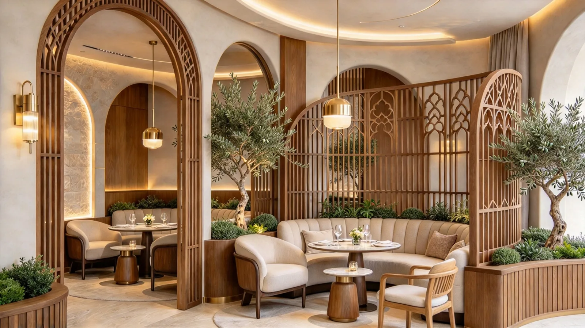
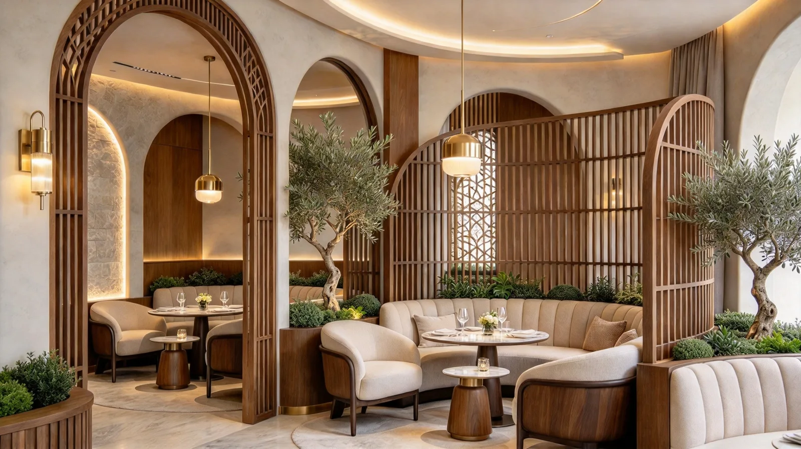
Semi-private lounge areas defined by arched wooden partitions with decorative lattice screens. Cream upholstered curved banquettes, olive trees, and gold pendant lights create an intimate Mediterranean atmosphere.
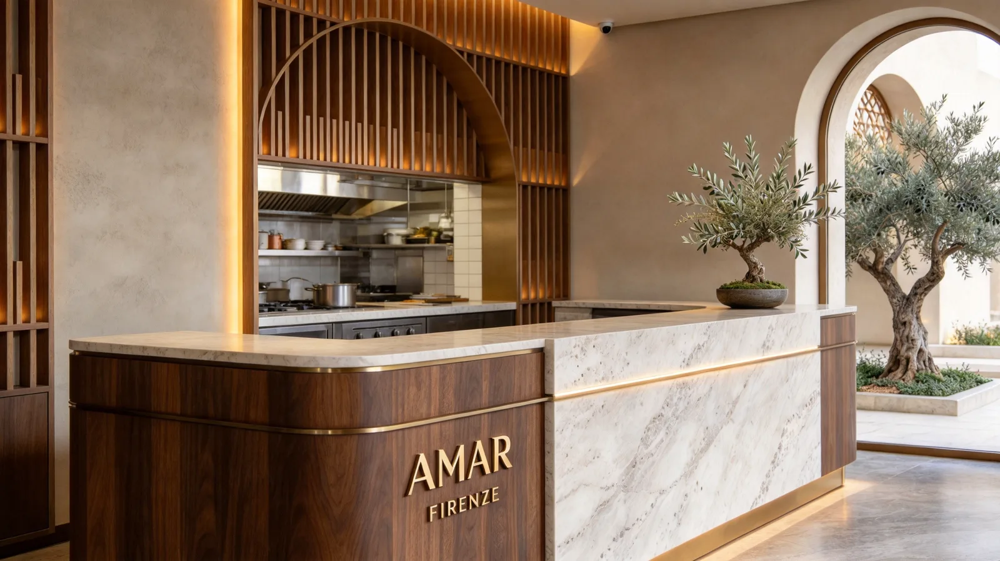
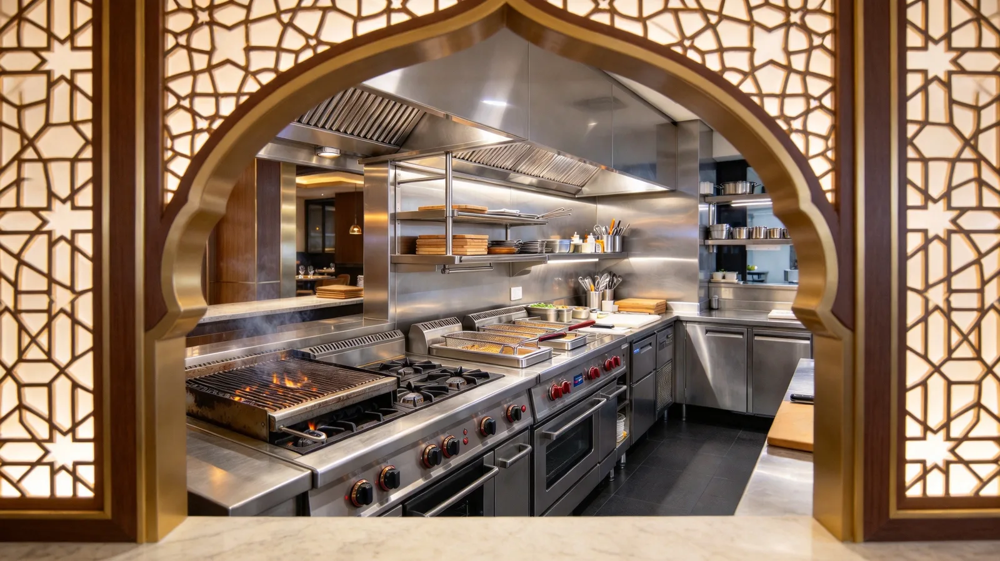
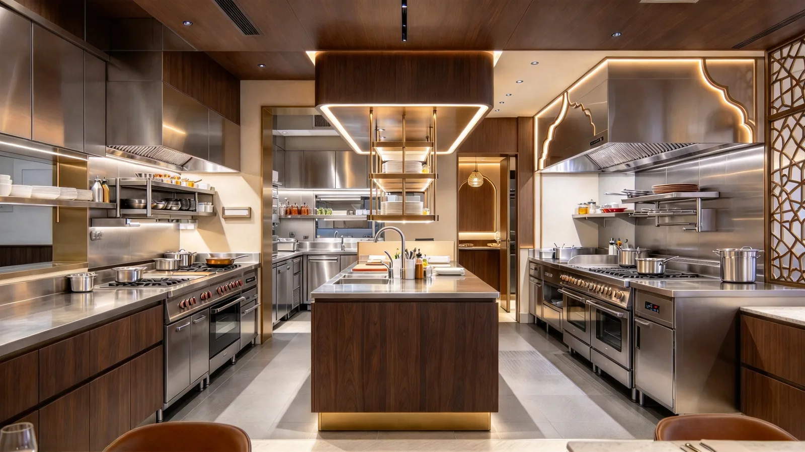
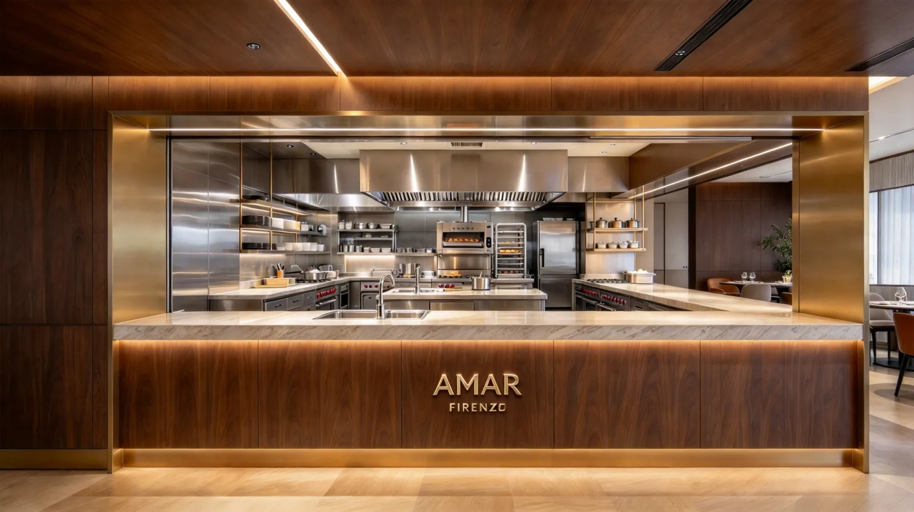
Professional open kitchen with stainless steel equipment, marble pass counters, and decorative arched frames connecting kitchen to dining. The kitchen pass features AMAR FIRENZE branding on walnut wood paneling.
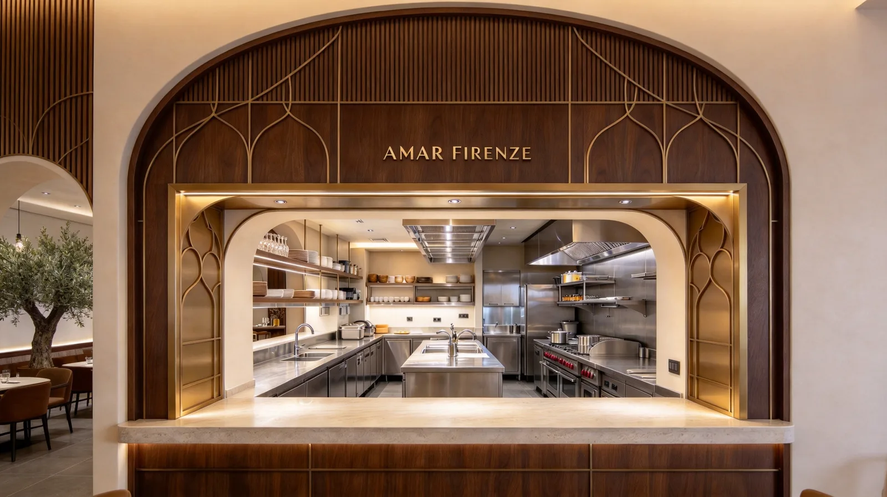
Grand reception area with Carrara marble desk, walnut wood and brass trim, vertical wood slat wall panels with warm backlighting. An ancient olive tree visible through the arched entry sets the Mediterranean tone.
Six zones, one design language. Every material, finish, and proportion coordinated from a single source — no mismatched tones between bar, dining, and kitchen.
One PO, one project manager, one quality standard. No finger-pointing between furniture, millwork, lighting, and architectural element suppliers.
Parallel production across our 19-partner Foshan network. Custom millwork, marble fabrication, and metalwork run simultaneously — not sequentially.
Share your restaurant concept, brand standards, or design brief — we'll respond with a tailored FF&E proposal within 48 hours.